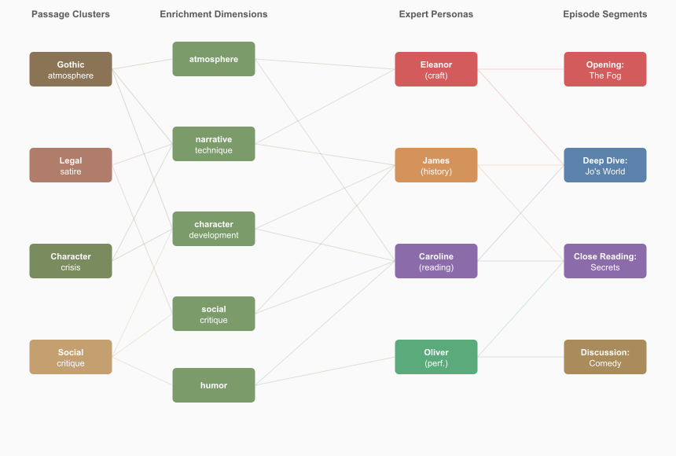

Not In Our Time: Transport-Based Content Selection
An Inspectable, Manipulable Alternative to RAG — Demonstrated on Literary Discussion Podcasts for 15 Victorian Novels
Chris Brew
The Ohio State University
LexisNexis Legal & Professional
MIDWEST SPEECH & LANGUAGE DAY 2026
"Fog everywhere. Fog up the river, where it flows among green aits and meadows; fog down the river, where it rolls defiled among the tiers of shipping and the waterside pollutions of a great (and dirty) city. Fog on the Essex marshes, fog on the Kentish heights." — Charles Dickens, Bleak House (1853), Chapter 1
The Question
A reader who surveys a novel broadly and a reader who studies it narrowly will assemble different evidence. Do they arrive at different discussions?
Google's NotebookLM popularised LLM-generated podcast conversations, but the conversational design is largely unexamined. What makes a multi-voice discussion cohere — sound like a genuine conversation rather than parallel monologues? What levers does a designer have, and which ones actually matter?
We implement two reading strategies as passage-selection algorithms applied to 15 Victorian novels, then generate structured multi-voice literary discussions from each selection.
15
novels
60,774
passages
180
conditions
Seven authors (Dickens, Eliot, Gaskell, Forster, Collins, Gissing, Oliphant), seven decades (1850–1924).
"And all that night the coffin stands ready by the old portmanteau; and the lonely figure on the bed, whose path in life has lain through five and forty years, lies there with no more track behind him that any one can trace than a deserted infant."
— Bleak House, Ch. 11 — The death of Nemo
Min-Cost Flow Selection
Passages flow through enrichment dimensions and expert demand nodes to episode segments. Every arc is inspectable and adjustable.

Two Reading Strategies
Synoptic (min-cost flow): 59 passages from 28 chapters. Favours character development (+8.3 pp) and plot (+10.2 pp). Zero LLM tokens, <1 s.
Analytical (embeddings + LLM curation): 32 passages from 20 chapters. Favours social critique (+13.4 pp) and thematic depth (+6.9 pp).
No-passages: LLM discusses from prior knowledge alone.
Why Not RAG?
Standard RAG retrieves by embedding similarity and feeds results to an LLM. Effective but opaque: the user cannot see why a passage was selected, cannot adjust criteria, and cannot explore how different priorities reshape the output.
Min-cost flow makes every decision visible as a cost, a flow, and a constraint. Solving a flow costs <1 s and zero LLM tokens — a thinking tool for rapid exploration of alternatives.
References
Fish, S. (1980). Is There a Text in This Class? Harvard UP.
Bayard, P. (2007). How to Talk About Books You Haven't Read. Bloomsbury.
Carlini, N. et al. (2021, 2023). Extracting/quantifying memorization in LLMs. USENIX Security; ICLR.
Ahuja, R., Magnanti, T. & Orlin, J. (1993). Network Flows. Prentice Hall.
Moretti, F. (2013). Distant Reading. Verso.
Interactive Demo & Acknowledgements
bleakhouse-demo.fly.dev
Browse 180 conditions, listen to episodes, inspect passage backlinks.
Thanks to The Ohio State University College of Engineering and LexisNexis Legal & Professional.
The Reader Makes the Reading
The pipeline privileges expert identity at every stage — enrichment dimensions match demand profiles, the selector optimises for demand satisfaction, host preparation targets specific experts, and the script prompt reinforces perspectives. Convergence follows from this engineering.
The system exposes four independently manipulable levers: expert personas (demand profiles); passage grounding (anchoring quotation and preventing confabulation); conversational design (quote handling, reactive language, turn structure); and segment continuity (bridging between independently generated segments).
Synoptic
59 passages, 28 chapters
Character & plot focused
Min-cost flow solver
J = 0.057
<6% overlap in passages
Analytical
32 passages, 20 chapters
Critique & theme focused
Embedding retrieval + LLM
Yet: Expert Airtime Stable to ±2%
Eleanor Hartley (literary critic): 32–37% James Blackstone (social historian): 30–37% Caroline Woodcourt (close reader): 29–34%
Each stage reinforces the framework. The convergence is suggestive of Fish's (1980) thesis — but the engineering is the mechanism, and we name it honestly.
Three Panels Discuss Bleak House
Literary Panel
Eleanor Hartley (Literary Critic):
What strikes me about that Nemo sentence is the grammatical audacity of it. "A deserted infant" — Dickens reaches for the most helpless possible image of erasure. The infant image should be about beginning, and Dickens flips it into a closing.
James Blackstone (Social Historian):
The fog is not decoration. It is the Court of Chancery made visible. "Lies there with no more track behind him that any one can trace than a deserted infant." That sentence is the whole novel compressed into a single image.
Caroline Woodcourt (Close Reader):
Readers sometimes use the fog as a kind of permission — "this is a great symbolic novel, I'm in the presence of Literature with a capital L" — and then they stop actually listening to what Dickens is telling them. What moves me is something far quieter — the moment where a human life is described as leaving no trace.
Interdisciplinary Panel
Sarah Chen (NLP Scientist):
That is a noun phrase with four pre-nominal modifiers, each compounded — and then "brazen-faced" pulls the floor out. The first three feel like nautical specifications — they're doing the register of technical competence — and the fourth is an insult.
Elena Volkov (Musicologist):
Institutions don't announce their corruption — they announce their solidity, their procedure, their continuity. I spent years studying how Soviet conservatories presented themselves as nurturing talent while systematically destroying composers who stepped out of line.
Rebecca Martinez (Astronomer):
The ships of Law and Equity aren't sunk, they're in reserve. In my field, we'd say the system is in a quasi-stable state. The energy is there. Nothing has been resolved. The fog is the natural atmosphere of a system that has never actually resolved anything.
The experts bring their metaphors (quasi-stable states, leitmotifs, phrase structure) but not their methods — the scaffold imports literary-critical norms regardless of the persona.
Alternative Panel
Oliver Trevelyan (Actor & Narrator):
When I first read it aloud — really performed it — I remember stopping and thinking: this is incantation, not description. He builds an atmosphere so thick and particular it becomes a character in its own right.
Daniel Rosen (Marxist Historian):
The fog is doing what Chancery does throughout the novel — it penetrates everywhere, it afflicts everyone, but it does not afflict everyone equally. The ancient Greenwich pensioners wheeze by their firesides — they at least have firesides. The boy on deck has nothing between him and the weather but his own skin.
Edmund Leigh (Moral Philosopher):
One must be a little careful not to flatten the novel into a single spatial metaphor, however seductive. Dickens gives us Bleak House — the actual building — and Esther's description of it is one of the warmest passages in the book.
Deliberate Stereotypes
The expert personas are deliberately caricatures: the literary critic always finds prose rhythm; the social historian always finds institutional critique; the close reader always finds texture. By making the stereotypes explicit — encoded as demand vectors rather than implicit in a prompt — the system turns editorial bias into a first-class object that can be inspected, compared, and argued about.
The Knowledge Gradient
82% of invented quotes draw 90–100% of their words from the novel's own vocabulary. Mean overlap: 95.1%.
Without passage grounding, the LLM produces graduated pastiche — not hallucination. Fidelity tracks novel prominence.
Ungrounded Quote Verification (%)
Middlemarch Eliot
57
Bleak House Dickens
53
David Copperfield Dickens
44
Passage to India Forster
39
Cranford Gaskell
33
Our Mutual Friend Dickens
29
New Grub Street Gissing
20
The Odd Women Gissing
6
North and South Gaskell
2
Hester Oliphant
0
No Name Collins
0
Grounded conditions achieve 97–98% for all novels. The gradient reflects analytical reinforcement in training data (Carlini et al., 2021, 2023), not prose style.
Pastiche in Action
"Name, Jo. Nothing else that he knows on. Don't know that everybody has two names. Never heerd of sich a think. No father, no mother, no friends. Never been to school."
— Bleak House, Ch. 11 — Jo's testimony
"Fog everywhere. Fog up the river…"
Verified 100%
Reproduced verbatim from LLM memory
"I am very weak, but I shall begin the world."
Invented · 100% vocab
Every word appears in the novel, but this sentence does not exist
"I don't know nothink."
Invented · 80% vocab
Jo's dialect remembered; phrasing reconstructed
Alternative Expert Panels
Beyond the primary literary triumvirate (Hartley / Blackstone / Woodcourt), the system includes three further specialist personas with distinct analytical toolkits.
Edmund Leigh
Moral Philosopher
"Skimpole is the finest comic villain in the book, and I use that term with some precision. He is not a villain by malice — he is a villain by abdication."
Oliver Trevelyan
Actor & Narrator
"That phrase — 'forsworn and abjured' — is extraordinary to read aloud. Those are legal words — the language of the court itself — turned against the court."
Daniel Rosen
Marxist Historian
"The darkness in that scene is the shadow of an institution, not just a weather event. Chancery casts its darkness across every threshold in this novel."
Each persona defines a distinct demand vector — a formal encoding of what that expert will seek in any passage. The system supports all 33 = 27 panel combinations; 9 are produced across the 180 conditions in this study.
Designed Cordiality
The prompt instructs experts to be agreeable. The result is a recognisable formula: deferential opener, immediate contradiction.
From the script prompt:
Experts react to each other: agree, push back gently, riff on each other's ideas.
The resulting formula, across all 15 novels and all panels:
Edmund Leigh (archived, Bleak House):
"I don't dispute any of that — and James's contextual detail is, as always, illuminating. But I'd want to resist the temptation to read Bleak House primarily as a pamphlet dressed in fiction's clothing."
Eleanor Hartley (bh_trn_literary, Bleak House):
"I wouldn't dispute any of that — but I'd add a layer, because 'deserted infant' is not merely a figure of speech."
Caroline Woodcourt (cran_nop_literary, Cranford):
"I wouldn't dispute that reading of the prose. But…"
The opener is disingenuous: the speaker always does dispute it. The formula is prompt-compliance made visible — push back gently produces stylised deference that is recognisable as designed, not conversational.
Key Findings
1. Framework dominates strategy.
Two reading algorithms select <6% overlapping passages yet produce discussions with identical expert airtime (±2%). This convergence follows from a pipeline that reinforces expert identity at every stage — suggestive of Fish's thesis, but the engineering is the mechanism.
2. Pastiche, not hallucination.
Ungrounded LLMs write in the style of a novel, not from it. Fidelity tracks training-data exposure: a measurable knowledge gradient from Middlemarch (57%) to Hester (0%).
3. Scaffolding is content-independent.
Host preparation raises questions from ~1 to ~11 per segment, uniformly across all 15 novels (5.3× to 14.1×). Dynamics are designed, not emergent.
4. Cordiality is designed, not conversational.
The prompt instruction push back gently produces a recognisable formula across all panels and all 15 novels: deferential opener ("I wouldn't dispute that…") followed immediately by contradiction. The deference is disingenuous and measurably prompt-driven.
Framework > Grounding > Strategy
The decomposition has a clear hierarchy. Framework determines character, grounding gates accuracy, strategy is surprisingly irrelevant.